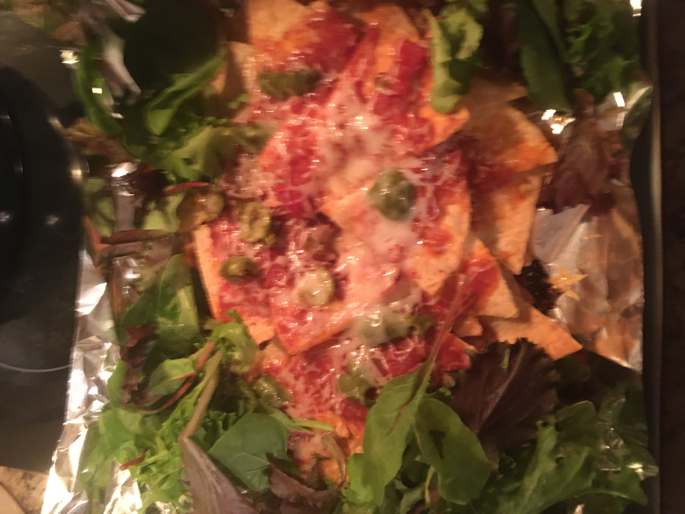

Nachos

Description
This classic snack dish is reimagined in meal size and enhanced with greens.
Ingredients
- Half a bag of tortilla chips
- Half a jar of red salsa
- Half a brick of sharp cheddar cheese
- 10-12 fancy olives
- A few handfuls of salad greens
Steps
- Preheat an oven to 425 degrees.
- Line a baking sheet with foil.
- Grate the cheese.
- Tear up the olives into little pieces.
- Layer half the chips, half the salsa and half the grated cheese on the baking sheet.
- Layer the other half of the chips, salsa, and grated cheese, and all of the olives, on top of the first layer.
- Bake for 10 minutes, or longer if desired.
- Add salad greens and serve.